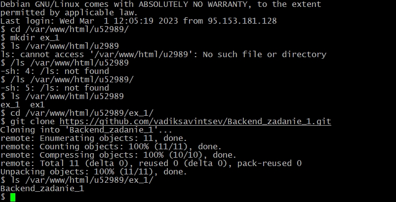
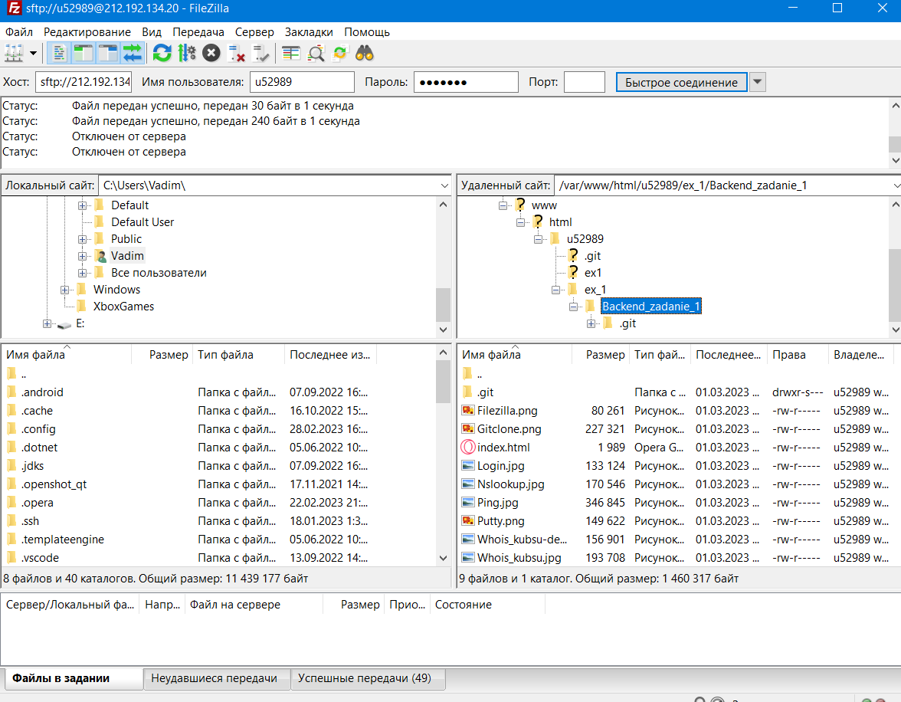

Логин


Подключение по SSH с помошью клиента Putty
Ping

С помощью команды ping измерение времени за которое общаются два хоста
а также выявление IP адреса конкретного хоста, как в локальной сети, так и в глобальной
Nslookup

С помощью команды nslookup узнал A-записи и MX-записи доменов kubsu.ru и kubsu-dev.ru
А-запись-это адресная запись
MX-запись-это почтовый шлюз
Whois


С помощью команды whois, которая позволяет легко получить подробную информацию о домене или сайте,
узнал информацию о доменах kubsu.ru и kubsu-dev.ru
Git clone

С помошью git clone скопировал содержимое с репозитория в папку на учебном сервере
С помошью команды ls посмотрел содержимое папки u52989
Filezilla

С помощью Filezilla скачал содержимое с папки u52989 с учебного сервера